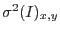
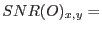
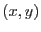
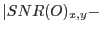
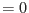

smoothstyle=`adaptive'.
This is exactly the same as the patchwork convolution described in section 3.3.4, except here the task calculates the library of convolvers and the associated index image itself.
Adaptive smoothing is designed for Poissonian images made by counting photons or events. (Note that all images made by XMM instruments have this character.) For such non-negative images it is convenient to define the signal-to-noise ratio (SNR) at each pixel as the value at that pixel divided by its standard deviation. The intent of adaptive smoothing is to produce an output image in which the SNR at each pixel is as close as possible to the constant value given in parameter desiredsnr. Through this process, fainter areas become more thoroughly smoothed than brighter areas. This implies that the detail which one wishes to preserve from smoothing should be bright rather than dark - it would not be advisable, for example, to adaptively smooth an image of absorbing dust filaments on a bright background.
The convolvers are normalized gaussians of the form described in section 3.3.1. The exact distribution of their widths is not of primary importance so long as there are enough of them within a wide enough range to cater for the variations in SNR of the input image. There are several ways in which the widths of the gaussians can be established. Firstly, the user can provide a list of widths directly via the userwidths parameter; alternatively, the user can provide minimum and maximum values (parameters minwidth and maxwidth), specify the number of convolvers (nconvolvers) and the scaling rule to be used (widthliststyle), and allow the task to calculate the widths.
The relation between input and output standard deviation is given by equation 2. For the square, symmetric gaussian convolvers of section 3.3.1 this becomes
giving the following equation for the signal-to-noise ratio of the smoothed image:
As described in section 3.2, the user can either supply an explicit image of the variance  of the input image, or this can be left implicit by leaving readvarianceset at its default value of `no'. In the latter case, the task works under the assumption that the input image is Poissonian and thus may be used as an estimate of its own variance.
It is not possible to invert equation 3 so as to arrive at the required width of the gaussian convolver needed to give desiredsnr at each . Instead the solution must be found iteratively. The procedure used by asmooth
is simple and therefore robust: for each image pixel, the task starts at the broadest gaussian in its library and works through the library until
desiredsnr reaches a minimum.
reaches a minimum.
The task actually makes two passes through the library of gaussians: the first as described above, to calculate the index image; the second refers to the index image while performing the convolution, exactly as described in section 3.3.4.
Note that variance values  are permitted. This leaves open the possibility that the denominator of equation 3 may be zero-valued at some . Equation 3 is not calculated for such pixels: they are instead simply allocated in the index image to the first, ie broadest, gaussian.
Occasionally it is useful to be able to apply the adaptive smoothing calculated for one image to another. The smoothing information can be stored to file in two ways: either directly as a set of convolver images plus an index image (via parameters writeconvolvers, outconvolversset and outindeximageset), or via a template image (writetemplateset and outtemplateset). To find out how to make use of these files, look in sections 3.3.4 and 3.3.6 respectively.